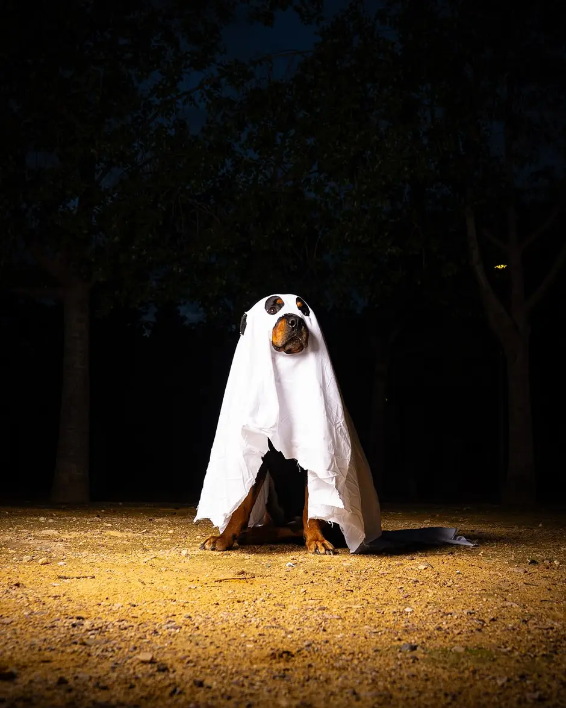
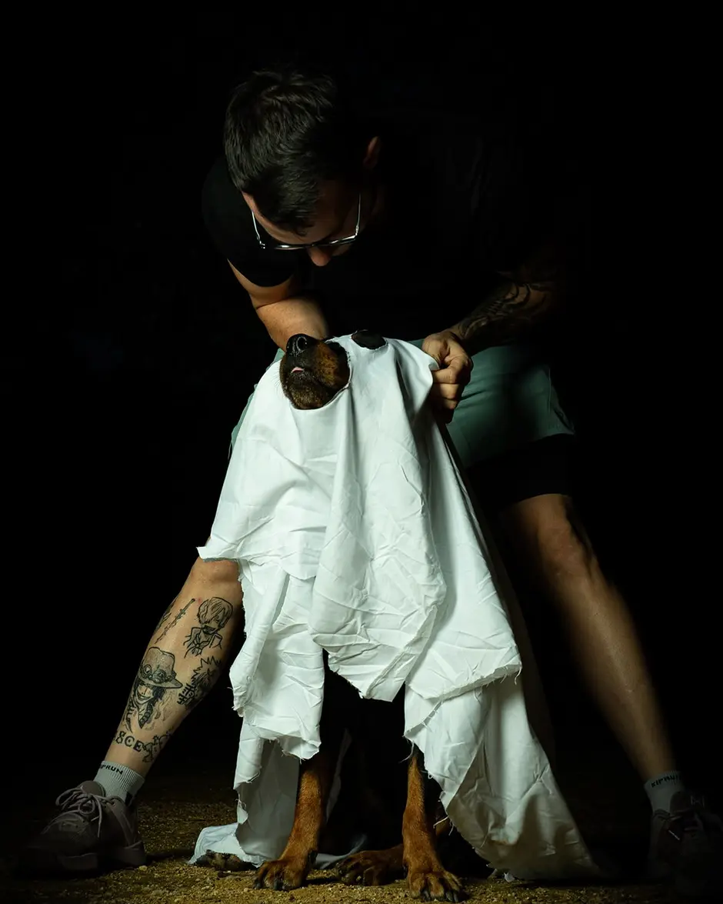

Maya se dejó poner la sábana sin rechistar. Se quedó quieta, con la lengua fuera, mientras le recortábamos los agujeros de los ojos. Pero eso no significa que todos los perros lo lleven igual, y la diferencia entre un perro que se divierte y uno que aguanta está en detalles que es muy fácil pasar por alto.

Por qué esta noche es distinta
No es solo el disfraz. En una sola noche se juntan cuatro cosas que, por separado, ya alteran a muchos perros:
- Petardos y fuegos artificiales, impredecibles y a todo volumen.
- El timbre sonando decenas de veces, cada una con gente desconocida al otro lado.
- La puerta abriéndose una y otra vez, que es por donde se escapan.
- Gente disfrazada, con máscaras, siluetas raras y voces que no reconoce.
Señales de que lo está pasando mal
Un perro asustado casi nunca ladra ni muerde. Lo que hace es mucho más discreto, y por eso se ignora tanto:
- Jadeo sin calorSi jadea en una noche fresca y sin haber corrido, es estrés.
- Orejas hacia atrásPegadas al cráneo, no simplemente relajadas.
- Se lame el hocicoLametones rápidos y repetidos sin haber comido.
- BostezaBostezos seguidos cuando no tiene sueño.
- Se queda congeladoInmóvil y rígido. No está tranquilo: está bloqueado.
- Busca esconderseDebajo de la cama, detrás del sofá, en el baño.
🐾 El error más repetido: pensar que un perro quieto es un perro a gusto. Muchas veces la quietud es lo contrario — es el animal que ha decidido que no puede hacer nada.
El disfraz: la regla de los treinta segundos

Si sigue haciendo lo que hacía antes, bien. Si se queda parado, se sacude, intenta quitárselo o te mira buscando ayuda, se le quita y no pasa nada.
Y hay cuatro cosas que un disfraz nunca debe hacer: taparle los ojos, cubrirle el hocico, apretarle el pecho o impedirle moverse con normalidad. Un perro necesita jadear para regular su temperatura; si el disfraz se lo impide, no es un disfraz, es un problema.
Cómo preparar la casa
Las recomendaciones de los colegios veterinarios para noches de petardos sirven igual para esta:
- Una habitación interior y tranquila donde pueda esconderse, con la televisión o la radio puestas para enmascarar el ruido de fuera.
- Pasea muy temprano o muy tarde, cuando los petardos aflojan, y por las zonas más tranquilas.
- Arnés en vez de collar. Un perro en pánico se escurre de un collar con una facilidad que asusta.
- Revisa ventanas, balcones y puertas. Un perro aterrorizado busca cualquier salida.
- Si el miedo es serio, habla con tu veterinario con semanas de antelación. Los tratamientos de apoyo necesitan tiempo; el día 31 ya es tarde.
No es verdad que consolarlo empeore su miedo
Es una de las creencias más extendidas y los colegios veterinarios la desmienten: acariciar a un perro asustado no refuerza su miedo, siempre que tú mantengas la calma.
Lo que sí lo empeora es regañarle. Eso solo le añade ansiedad a la que ya tiene.
Si se escapa
Esta es la razón de verdad para tenerlo todo revisado antes. Comprueba hoy, no el día 31, que el microchip tiene tus datos actualizados y que la chapa lleva un teléfono que funcione. Un microchip registrado a un número antiguo no sirve de nada.
El chocolate
En una noche con bolsas de caramelos por toda la casa, conviene recordarlo: el chocolate contiene teobromina, que los perros metabolizan muy despacio y les resulta tóxica. El negro y el de cobertura son los peores. Si sospechas que ha comido, llama al veterinario sin esperar a ver síntomas.
Y si tu perro es PPP
Aquí hay una capa más que nadie cuenta. Un perro potencialmente peligroso sigue obligado por ley a llevar bozal y correa corta en la vía pública, y eso no se suspende porque esté asustado.
Un perro en pánico con bozal es un perro que no puede jadear con normalidad justo cuando más lo necesita. Si tienes un PPP, la noche de Halloween se planifica aún antes: paseo pronto, correa bien revisada y vuelta a casa temprano.
🎃 Y una última cosa. Esa de la foto es una Rottweiler de 40 kg a la que la ley llama potencialmente peligrosa, sentada en un parque dejando que le pongan una sábana para que los niños se rían. Si alguien necesita una imagen de lo que es el estigma PPP, ahí la tiene.